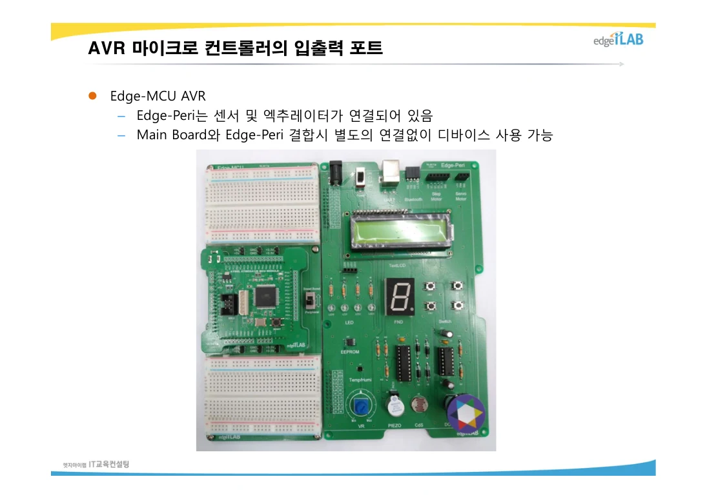
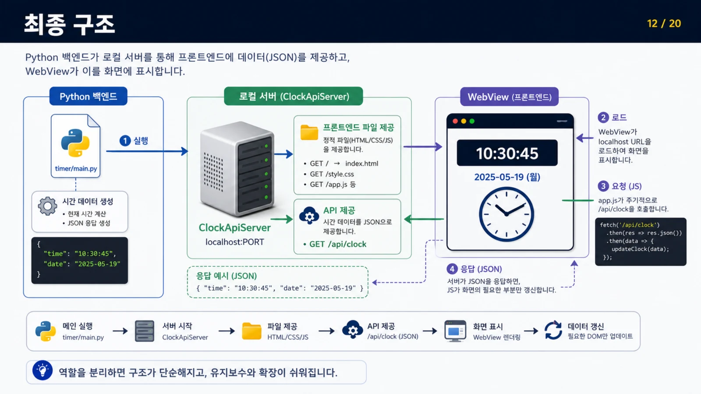

EDUCATION ARCHIVE / KOREA UNIVERSITY SEJONG / 2026
센서에서 화면까지,
IoT를 만드는 수업
고려대 세종 IoT 과정 · 일곱 가지 학습 영역으로 정리한 수업 기록
지역·산업맞춤형 인력양성사업
지능형(AI) 사물인터넷(IoT) 소프트웨어 개발자
고려대학교 세종HRD사업단이 운영한 IoT 소프트웨어 개발자 양성 과정. 센서·임베디드부터 데이터·사용자 화면까지, 하나의 서비스가 동작하는 과정을 실습으로 배웠습니다.
- 교육 운영
- 고려대학교 세종HRD사업단
- 교육 장소
- 고려대학교 세종캠퍼스 학술정보관
지하 1층 B107C 미래실 - 전체 과정 모집 안내 기준
- 2026.03.09–07.24 · 97일 · 760시간
- 이 글의 강의 범위
- 최수길 담당 수업·실습과 중간 프로젝트
전체 과정의 최종 프로젝트는 제외
LED를 켜는 코드가 센서 데이터를 보내고, 데이터베이스에 기록된 값이 화면에 나타나기까지. 개별 기술을 따로 익히는 데서 출발해 서로 연결해 보는 과정이었다.

크게 보기 ↗ATmega128 GPIO 교안 · 12쪽

크게 보기 ↗PyWebView 타이머 교안 · 11쪽
IoT 시스템 프로그래밍
C 언어 · 생각을 실행 가능한 코드로
과목별 수업 기록
WSL·Ubuntu에서 코드를 작성하고 컴파일하는 것으로 시작했다. 조건문과 반복문, 배열·함수·포인터를 익힌 뒤 구조체와 파일 입출력, 동적 메모리로 작은 프로그램을 구성했다.
자료구조와 다중 파일 빌드, CMake·GDB를 함께 다루며 코드를 나누고 문제를 추적하는 방법을 연습했다. 볼링 점수 계산 미니 실습에서는 스트라이크와 스페어 규칙을 조건과 함수로 옮겼다.
ATmega128A · Raspberry Pi Pico 2 W
임베디드 · 코드가 실제 장치를 움직이도록
과목별 수업 기록
LED와 버튼에서 시작해 FND·LCD 표시, 외부·타이머 인터럽트, UART 통신을 실습했다. ADC로 아날로그 값을 읽고 PWM으로 모터와 부저를 제어하며 입력과 출력의 관계를 확인했다.
I²C·SPI 주변장치와 센서·서보 실습을 거쳐 Pico 2 W로 범위를 넓혔다. 중간 프로젝트에서는 여러 보드가 센싱과 제어를 나누어 맡는 구조로 이어졌다.
객체지향 프로그래밍
C++ · 데이터와 동작을 객체로 묶기
과목별 수업 기록
입출력 스트림과 문자열 처리에서 출발해 클래스·멤버 함수, 생성자와 소멸자를 학습했다. 객체를 만들고 해제하는 시점, 포인터와 참조가 가리키는 대상을 구분하는 데 초점을 두었다.
C에서 익힌 함수와 메모리 개념을 객체 단위로 다시 구성하는 시간이었다. 이 기초는 이후 C++ OpenCV 실습에서 영상 객체와 관련 함수를 다루는 기반이 되었다.
SQL · MySQL
데이터베이스 · 측정값을 기록하고 질문하기
과목별 수업 기록
도서·고객·주문 예제로 테이블과 기본키·외래키 관계를 익혔다. SELECT·WHERE부터 정렬과 집계, GROUP BY·HAVING, JOIN과 서브쿼리로 필요한 데이터를 조회했다.
INSERT·UPDATE·DELETE와 뷰를 실습하며 데이터의 생성·변경·조회 흐름을 정리했다. 프로젝트에서는 이 관계형 데이터 사고를 장치·사용자·측정 이력 설계로 확장했다.
Python · PyWebView
Python · 데이터를 다루고 사용자 화면 만들기
과목별 수업 기록
리스트와 함수, 모듈·패키지, 클래스·상속, 예외와 파일 처리를 실습했다. CSV와 로깅, 그래프 표현에 이어 스레드와 비동기 처리로 작업의 흐름을 나누었다.
PyWebView 타이머와 버튼·파일 연동 예제를 통해 Python 기능을 HTML·CSS·JavaScript 화면에서 사용했다. Flask와 SSE를 다루며 화면 표시와 백엔드 처리를 연결하는 방식을 익혔다.
MQTT · Wi-Fi · 메시지 흐름
네트워크 · 센서와 서비스 사이의 약속
과목별 수업 기록
Mosquitto 브로커와 발행·구독 구조를 중심으로 센서 값을 메시지로 주고받았다. 보드와 프로그램이 같은 토픽·데이터 형식을 사용해야 서로의 상태를 이해할 수 있음을 실습했다.
팀 프로젝트에서는 센서 수집, 제어 명령, 연결 상태를 구분하고 하트비트와 통신 오류를 다뤘다. 하나의 보드 안에서 끝나던 코드를 여러 장치가 협력하는 서비스로 확장하는 연결 고리였다.
C++ 영상 처리 · 2026.06.08–06.12
OpenCV · 카메라 영상에서 의미 찾기
과목별 수업 기록
Mat과 좌표·영역 자료형, 영상 복사와 카메라 입출력에서 시작했다. 그리기·마우스 이벤트·트랙바로 실험 화면을 만들고, 밝기·대비와 필터, 좌표 변환을 적용했다.
에지·허프 변환, 이진화·모폴로지·연결 성분으로 형태를 추출했다. 이어 QR, 특징점과 매칭·호모그래피, KNN 숫자 분류 예제를 살펴보며 처리 단계와 결과의 관계를 확인했다.